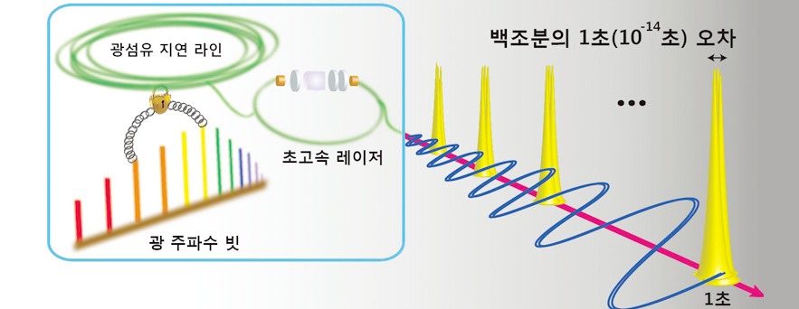

Report by Subjects
Report by Subjects
KAIST RESEARCH ACHIEVEMENTS
Photonic oscillators with a timing error of 3 femtoseconds
Department of Mechanical Engineering Jungwon Kim
Summary
In 2026, accelerator-based light sources can record molecular movies with atomic spatial resolution and femtosecond time-resolution. Also, radar and lidar performance is greatly improved, allowing more sensitive and accurate detection for defense systems and environmental remote sensing, and the Internet of Things (IoT) is fully realized thanks to the development of faster, more accurate timing networks. All of these achievements were made possible through the use of ultralow-noise photonic oscillators for the generation and application of microwave, terahertz, and optical signals.
R&D Report
Oscillators generate highly periodic clock signals that are used to synchronize the operation of systems. Today, high-performance oscillators play an important role not only in information and communication systems, but also for large-scale scientific facilities, measurement, defense, GPS, and navigation systems, to name only a few. For the development of ultrahigh-performance yet simple and robust oscillators, we demonstrate an all-fiber photonic oscillator with a three-femtosecond (3x10-15 seconds) timing error over a period of 0.1 seconds, the equivalent stability of which corresponds to an error of only one second in one million years.
Lower noise oscillators can not only improve the performance of existing timing systems, but also allow new high-precision applications that were not possible before. Today's state-of-the-art low-noise oscillators are based on specially designed and manufactured microwave or optical cavities that are both highly complex and expensive, limiting the breadth of their application. In this study, we pursued a new method of generating ultralow-noise clock signals using an all-fiber photonic oscillator that is cheaper and features a simpler design.

Fig 1. Principle of all-fiber pulsed photonic oscillator : Two spectral regions
in the frequency comb are applied to an all-fiber Michelson interferometer with a long fiber delay line. The timing of an ultrafast fiber laser is locked to the timing stability of long fiber delay. The resulting optical pulse train
has less than 3 femto-seconds error in 0.1 second, the stability
of which corresponds to 1 second error in 1 million years.
Free-running mode-locked lasers can generate optical pulse trains with sub-femtosecond timing jitter on a fast time scale. However, the jitter of free-running lasers rapidly diverges over longer time scales. For example, a recent study showed that the absolute RMS jitter of free-running fiber lasers reaches 20 picoseconds over a period of one second despite exhibiting only 710 attoseconds of jitter within 100 microseconds. Therefore, maintaining attosecond-level absolute timing jitter over much longer time scales (e.g., 10 milliseconds or longer) could significantly increase the performance of many existing applications and open up new applications in precision timing both in optics and electronics. To suppress the repetition-rate phase noise at lower Fourier frequencies, free-running mode-locked lasers can be locked to an ultrahigh-quality-factor (Q) radio frequency (rf), microwave, or optical reference. However, these previous state-of-the-art techniques are not only complex and expensive, but also fragile and alignment-sensitive. Therefore, a simpler, more robust repetition-rate stabilization method that can still achieve both ultralow phase noise/timing jitter and ultrahigh frequency stability is highly desirable. Here, we demonstrate a new all-fiber-based method for the repetition-rate stabilization of mode-locked lasers without using any cw lasers, spectral broadening, or fceo detection. This novel method is based on the direct repetition-rate stabilization of a mode-locked laser to a kilometer-scale fiber delay line. Using this method to stabilize a mode-locked erbium-doped fiber laser enables the all-fiber photonic generation of optical pulse trains with sub-femtosecond absolute timing jitter over a 0.01-second time scale, which is about 100 times longer than free-running lasers. Over a one-second time scale, the integrated absolute RMS timing jitter is suppressed by a factor of 500, from 10 picoseconds to only 20 femtoseconds.
Research Funding
ㆍThis research was supported by the National Research Foundation of South Korea (grant no. 2012R1A2A2A01005544).
Research Outcomes
ㆍAll-fibre photonic signal generator for attosecond timing and ultralow noise microwave, Scientific Reports, 5, 16250 (2015)